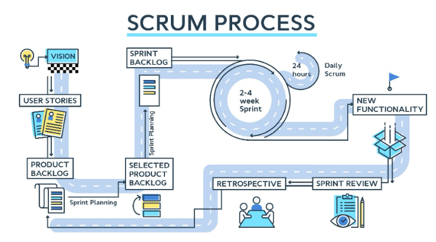

1. Scrum is a framework for project management commonly used in software development, although it has been used in other fields including research, sales, marketing and advanced technologies
2. Scrum is based on iterative incremental development, in which requirements and solutions are delivered in short cycles called sprints
There are three roles in Scrum: Scrum Master, Product Owner, and Development Team.
The Scrum Master is responsible for ensuring a Scrum team is operating as effectively as possible with Scrum values. This means they keep the team on track, plan and lead meetings, and work out any obstacles the team might face.
The Product Owner ensures the Scrum team aligns with overall product goals. They understand the business needs and customer expectations, and prioritize the work for the Development Team.
The Development Team delivers the work through the sprint. They are self-organizing and cross-functional, meaning they decide how to do their work and have all the skills needed to complete it
What is sprint?
1. A sprint is a time-boxed period of work that lasts one month or less
2. The Scrum guide states that the sprint length should be limited to one calendar month (4 weeks), but there is no lower limit prescribed
3. However, it is ideal to have 2-week sprints, as they allow for more frequent feedback and adaptation
4. A sprint should be long enough to produce a potentially releasable product increment, but short enough to limit risk
The SCRUM PRACTICES
Product & release backlog
Burn-down chart
Sprint backlog
Sprint planning
Scrum master + sprint

1. Crystal is an agile framework that focuses on the interaction among individuals rather than on the processes and tools used
2. It is based on two core beliefs: teams can find ways on their own to improve and optimize their workflows, and every project is unique and always changing, which is why that project’s team is best suited to determine how it will work
3. Crystal is not a single methodology, but a family of methods that vary according to the size, complexity, and criticality of the project
| Scrum | Crystal |
|---|---|
| Scrum is more disciplined and does not allow any further changes to be taken up within the sprint scope | Crystal is more permissive and accepts changes as per project and team size requirement |
| Scrum delivers as per the priority of backlog items, meaning it focuses on delivering value to the customer | Crystal delivers as per criticality, meaning it adapts to the level of risk involved in the project |
| Scrum has defined roles (Scrum Master, Product Owner, Development Team) and events (Sprint Planning, Daily Scrum, Sprint Review, Sprint Retrospective) that must be followed by every team | Crystal does not prescribe any set engineering methods or roles, but it is a combination of several agile methodologies that can be tailored to suit different situations |
1. Feature-driven development (FDD) is an agile framework that organizes software development around making progress on features
2. Features are more akin to user stories in Scrum
3. FDD blends a number of industry-recognized best practices into a cohesive whole
FDD has eight core practices that are driven from a customer’s perspective. They are:
1. Adaptive Software Development (ASD) is an agile framework that grew out of Rapid Application Development (RAD)
2. It aims to enable teams to quickly and effectively adapt to changing requirements or market needs by evolving their products with lightweight planning and continuous learning
ASD has a three-phase approach: speculate, collaborate and learn
In each phase, there are specific activities and practices that help teams deliver software that meets customer needs and expectations
Speculate:
Collaborate
1. This is where the team works together to deliver software features that meet customer needs. It involves communication, cooperation, feedback and self-organization among team members1.
2. The team also collaborates with customers and stakeholders to ensure alignment of expectations and requirements.
3. The collaborate phase emphasizes that people are more important than processes or tools.
Learn:
1. This is where the team reflects on their work and learns from their successes and failures. It involves reviewing, evaluating, measuring and reporting on project outcomes.
2. The team also learns from customer feedback and adapts their plans accordingly.
3. The learn phase emphasizes that continuous improvement is essential for delivering quality software.